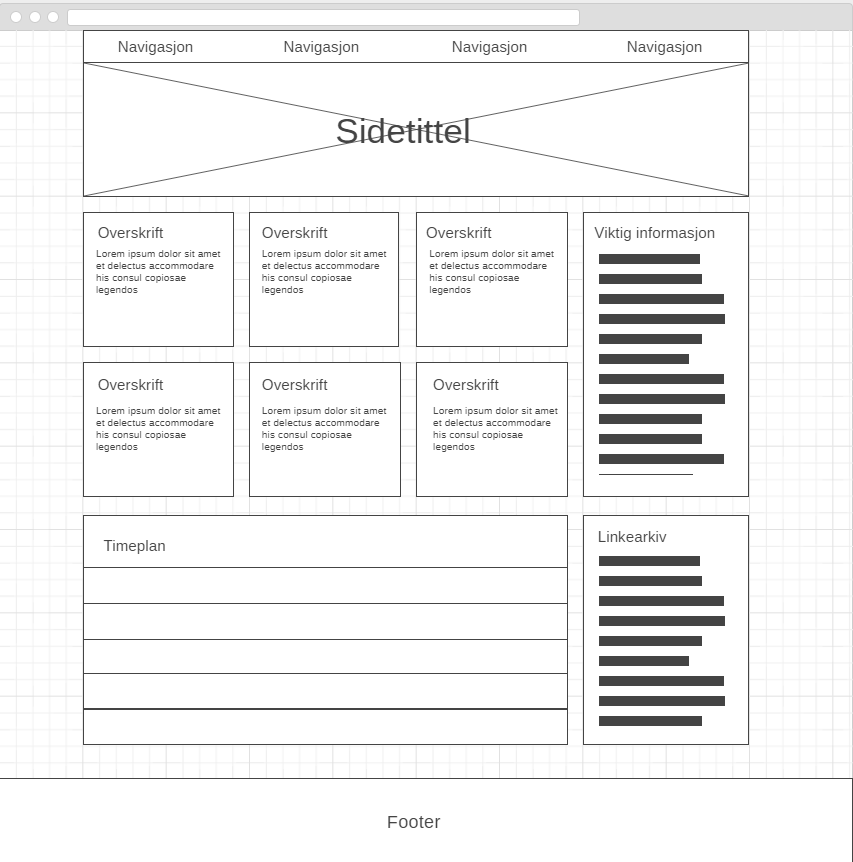
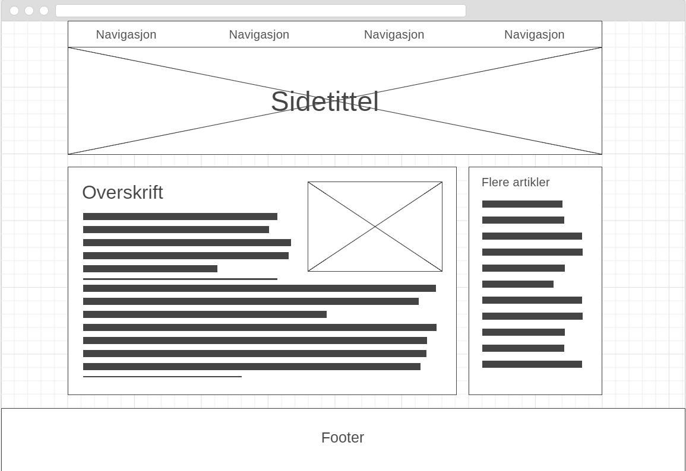

Om dette nettstedet
Planen var å lage en side med minimalistisk layout, uten unødvendige synlige bokser, streker eller annet rot. Jeg brukte flexbox og prosenter til å posisjonere elementene, fordi jeg fikk litt dårlig tid og hadde ikke tid til å lære meg grid. Målet var å bruke litt ekstra tid til å få til ordentlige, universelle løsninger isteden for å bruke stygge hacks og store mengder kode.
Jeg har ikke brukt flexbox før og jeg ble overrasket over hvor enkelt og pent det gikk an å plassere elementer uten å bruke float og pixler. Siden float har det med å leve sitt eget liv fikk jeg mye bedre kontroll ved bruk av flexbox og wrap.
På forsiden er forhåndsvisningen av artiklene hovedinnholdet og er plassert øverst som et rutenett i midtdelen av siden, fordi det er dette som er den viktigste informasjonen og skal være lett å få tilgang til. Videre nedover midtdelen finner man to Google-kalendere, en for timeplan og en agenda som viser viktige frister. Dette er ikke hovedinnholdet til denne siden, så jeg regnet dem som functions og de er derfor plassert lengre ned. Listen over linker er plassert som en aside slik at de er lett tilgjengelige, men fortsatt ikke tar oppmerksomheten vekk fra hovedinnholdet.
På artikkelsiden har jeg artikkelteksten som hovedinnhold og en aside med liste over flere artikler slik at det skal være lett å navigere seg til resten av det viktige innholdet. Endringer som er gjort underveis er å bytte plass på elementene for frister og linker på forsiden fordi Google-kalenderne så bedre ut når de sto på linje, jeg byttet også ut frister-elementet med et for flere artikler på artikkelsiden fordi det var mer relevant og brukbart for siden.